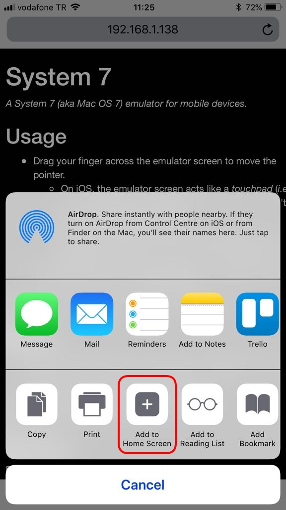
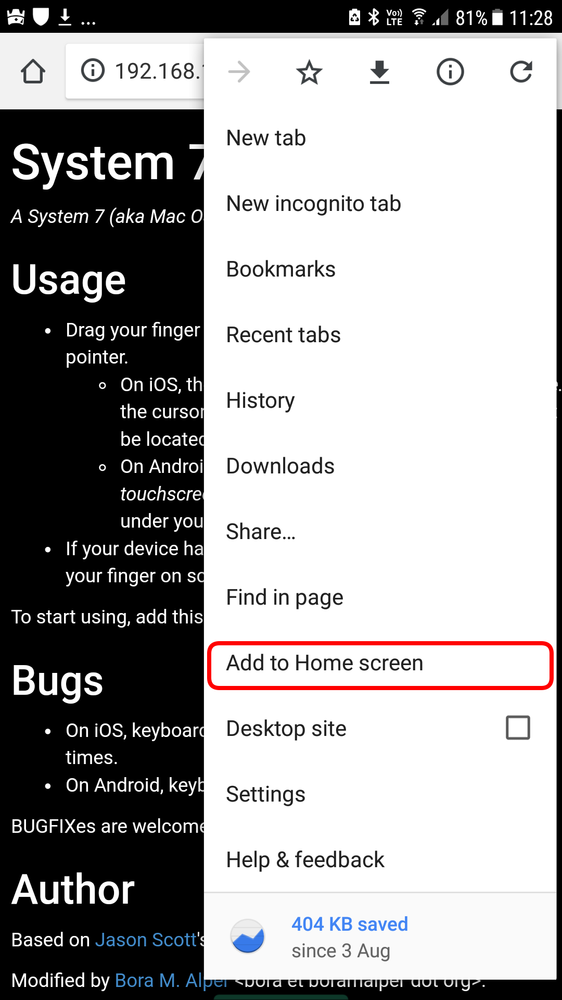

System 7
A System 7 (aka Mac OS 7) emulator for mobile devices.
Usage
- Drag your finger across the emulator screen to move the pointer.
- On iOS, the emulator screen acts like a touchpad (i.e.
the cursor will move as your finger moves, but won't be located under your finger).
- On Android, the emulator screen acts like a touchscreen (i.e.
the cursor will always be located under your finger).
- If your device has 3D Touch, press hard, otherwise keep your finger at least 500 ms on screen
for mouse click.
To start using, add this webpage to your Home Screen!

On iOS

On Android
Bugs
- On iOS, keyboard keys are repeated unpredictably a few times.
- On Android, keyboard doesn't work at all.
BUGFIXes are welcome! Find us on GitHub.
Author
Based on Jason Scott's awesome work on Internet Archive.
Modified by Bora M. Alper <bora et boramalper dot org>.